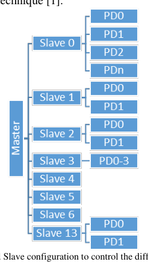

DVCon › US › 2023 › Verification
A Hardware and Software integrated power optimization approach with power aware simulations at SOC¶

| Authors | Eldin Ben Jacob (Samsung Semiconductors India Research, Bangalore, India), Harshal Kothari (Samsung Semiconductors India Research), Sriram Kazhiyur Soundarrajan (Samsung Semiconductors India Research), Somasunder Kattepura Sreenath (Samsung Semiconductors India Research) |
| Venue | DVCon US 2023 |
| Topic | Verification |
| Type | PAPER |
| ID | ref-20261018-ed23 |
Summary¶
A hybrid HW/SW power-control scheme combined with UPF-based power-aware (PA) simulation for a multi-domain SoC, reporting up to 83% scenario-level power reduction, ±0.5% front-end power-estimation accuracy, and up to 30% silicon power savings in the abstract.
다중 전력 도메인 SoC를 위해 HW/SW 하이브리드 전력 제어와 UPF 기반 Power-Aware(PA) 시뮬레이션을 결합한 접근법으로, 시나리오 단위 최대 83% 전력 절감, 프런트엔드 전력 추정 ±0.5% 정확도, 초록 기준 실리콘에서 최대 30% 전력 절감을 보고한다.
Key Insights¶
- Hardware-triggered power transitions complete in about 40 clock cycles, whereas software-triggered transitions over the slow APB clock need about 200 cycles. Hardware-only control missed the power targets in some scenarios, so the paper adopts combined HW/SW control.
- 하드웨어 트리거 전력 전이는 약 40 클록 사이클에 완료되는 반면, 느린 APB 클록을 거치는 소프트웨어 트리거 전이는 약 200 사이클이 필요하다. HW 단독 제어는 일부 시나리오에서 전력 목표를 달성하지 못했으므로, 논문은 HW/SW 결합 제어를 채택한다.
- The power-aware flow loads UPF 2.0/3.0 and Liberty files into a one-time compile, mimics the PMIC in the testbench, and adds checkers for isolation, level shifter, retention, power switch and power state table. RTL tests were also run with native low-power simulation, and the reported power estimation accuracy is about ±0.5%.
- PA 흐름은 UPF 2.0/3.0 및 Liberty 파일을 한 번만 컴파일하여 로드하고, 테스트벤치에서 PMIC 동작을 모사하며, isolation, level shifter, retention, power switch, power state table에 대한 체커를 추가한다. RTL 테스트도 네이티브 low-power 시뮬레이션으로 실행했으며, 보고된 전력 추정 정확도는 약 ±0.5%이다.
- Initial power was 2.1x–3.4x the specified values. Architecture tweaks driven by power-pin and functional-scenario analysis brought scenario-level savings of up to 83%. At block level, the full module measured about 41 mW against a 50 mW plan (18% less), idle power with rail on dropped from 8.44 mW to 5.86 mW (30.6%), and the power-gated block consumed 0.58 mW against 0.65 mW planned (11%).
- 초기 전력은 명시된 값의 2.1배~3.4배였다. 전력 핀 및 기능 시나리오 분석을 바탕으로 한 아키텍처 조정으로 시나리오 단위 최대 83% 절감을 달성했다. 블록 수준에서는 전체 모듈이 계획 50 mW 대비 약 41 mW(18% 감소)를 기록했고, 전원 레일이 켜진 상태의 유휴 전력은 8.44 mW에서 5.86 mW(30.6%)로 줄었으며, 전원 게이팅된 블록은 계획 0.65 mW 대비 0.58 mW(11%)를 소비했다.
- Assertion-based clock checkers across the SoC identified more than 100 free-running clocks that were moved under clock shut-off logic. The power-down order is clock shut-off, then isolation enable, then power shut-off, then reset assertion. Deeper power-down saves more power but increases wake-up latency.
- SoC 전반의 assertion 기반 클록 체커가 100개 이상의 free-running 클록을 식별하여 clock shut-off 로직 아래로 옮겼다. 전력 차단 순서는 clock shut-off, isolation enable, power shut-off, reset assertion이다. 더 깊은 전력 차단은 전력을 더 많이 절감하지만 웨이크업 지연 시간이 늘어난다.
Detailed Summary¶
Background and Problem¶
- The SoC has 75 power domains, 79 clock domains and 37 voltage domains (intro). Later text cites more than 70 power domains across 13 blocks, and the conclusion refers to 1 global master and 14 blocks. These counts are not fully consistent.
- SoC는 75개 전력 도메인, 79개 클록 도메인, 37개 전압 도메인을 가진다(서론). 이후 본문에서는 13개 블록에 걸쳐 70개 이상의 전력 도메인이라고 언급하며, 결론에서는 1개의 전역 마스터와 14개 블록을 언급한다. 이 수치들은 완전히 일치하지 않는다.
- HDLs cannot express power intent, so IEEE 1801 UPF 2.0/3.0 is used at RTL and carried through UPF-based synthesis. Liberty files supply library-cell power and timing data, and the simulator applies low-power semantics to cell instances.
- HDL로는 전력 의도(power intent)를 표현할 수 없으므로, RTL에서는 IEEE 1801 UPF 2.0/3.0을 사용하고 UPF 기반 합성으로 이어진다. Liberty 파일은 라이브러리 셀의 전력 및 타이밍 정보를 제공하며, 시뮬레이터는 셀 인스턴스에 low-power 의미론을 적용한다.
- Hardware-controlled power sequencing reduces software overhead, but it multiplies the scenarios that must be verified. Power-rail on/off sequencing is safety-critical.
- 하드웨어가 전력 시퀀싱을 제어하면 소프트웨어 오버헤드는 줄지만, 검증해야 할 시나리오는 크게 늘어난다. 전원 레일의 on/off 시퀀싱은 안전성에 중요하다.
- Initial measured power was 2.1x–3.4x the specified values in each scenario. Power-pin control and the lack of HW-only margin motivated a combined HW/SW approach.
- 시나리오별 초기 측정 전력은 명시된 값의 2.1배~3.4배였다. 전력 핀 제어와 HW 단독 제어의 여유 부족이 HW/SW 결합 접근법의 동기가 되었다.
- Tool-vendor differences in interpreting IEEE 1801 caused significant manual bring-up effort. A utility was built to resolve these discrepancies.
- IEEE 1801 해석에 대한 EDA 벤더별 차이로 인해 환경 구축에 상당한 수작업이 필요했다. 이 불일치를 해결하는 유틸리티를 개발했다.
Architecture and Methodology¶
flowchart LR
A[Power/voltage/clock domain analysis] --> B[Define verification scope]
B --> C[One-time compile: UPF + Liberty]
C --> D[PMIC behavior mimicked in testbench]
D --> E[Isolation / level-shifter / retention ops]
E --> F[Checkers]- Testbench: a SystemVerilog model drives the DUT top-level power balls using
$supply_on/offtasks, while CPU firmware masters control each IP's power domains according to the power manager IP's use case.
- 테스트벤치: SystemVerilog 모델이
$supply_on/off태스크로 DUT 최상위 power ball을 구동하고, CPU 펌웨어 마스터가 전력 관리 IP의 사용 사례에 따라 각 IP의 전력 도메인을 제어한다.
- Checkers: isolation, level-shifter, retention, power switch and power state table checks confirm that the DUT exercises the intended power intent.
- 체커: isolation, level shifter, retention, power switch, power state table 검사로 DUT가 의도된 전력 의도를 실제로 수행하는지 확인한다.
- Low-power entry (step 1): gating is idle-based and limits toggles at IP boundaries. IPs quiesce and handshake with the NoC and power controller over Q-channel or C-channel.
- Low-power 진입(1단계): 유휴 시간 기반 게이팅으로 IP 경계의 토글 수를 제한한다. IP는 Q-channel 또는 C-channel을 통해 NoC 및 전력 컨트롤러와 quiesce 및 핸드셰이크한다.
- Clock shut-off (step 2): an FSM cuts all clocks at the IP boundary. Assertion checkers monitor free-running clocks against the clock-tree architecture and found more than 100 such clocks.
- Clock shut-off(2단계): FSM이 IP 경계의 모든 클록을 차단한다. Assertion 체커가 클록 트리 구조를 기준으로 free-running 클록을 모니터링했으며 100개 이상을 찾아냈다.
- Power gating (step 3): the virtual rail is switched off through power switches. Signals are driven to X in simulation, and outputs are isolated to 0 or 1 with clamp cells to avoid X-propagation. Clamp values are checked by assertions.
- Power gating(3단계): power switch로 가상 레일을 차단한다. 시뮬레이션에서는 신호를 X로 구동하고, X 전파를 막기 위해 clamp 셀로 출력을 0 또는 1로 isolation한다. Clamp 값은 assertion으로 검사한다.
- Power-down sequence: low-power entry → clock shut-off → isolation enable → power shut-off → reset assertion. Selected memories and flops use retention.
- 전력 차단 순서: low-power 진입 → clock shut-off → isolation enable → power shut-off → reset assertion. 선택된 메모리와 플롭은 retention을 사용한다.
- Phases: OPR, CSO, RET and PSO. Transitions can be triggered by HW events from the core/security subsystem or Always-On registers, or by SW through APB register writes. SW controls include PLL-boundary clock gating, retention, clock shut-off and block resets. The power controller also supports clock gearing through a programmable AXI interface.
- 단계: OPR, CSO, RET, PSO. 전이는 core/security 서브시스템 또는 Always-On 레지스터의 HW 이벤트로 트리거하거나, APB 레지스터 쓰기를 통해 SW로 트리거할 수 있다. SW 제어에는 PLL 경계의 클록 게이팅, retention, clock shut-off, 블록 리셋이 포함된다. 전력 컨트롤러는 프로그래밍 가능한 AXI 인터페이스를 통한 clock gearing도 지원한다.
- Verification: all RTL tests were rerun as native low-power simulations. Retention and isolation strategies were added to UPF 3.0 for PG netlists. SoC-level code (branch, expression, toggle, FSM) and functional (including low-power) coverage were closed.
- 검증: 모든 RTL 테스트를 네이티브 low-power 시뮬레이션으로 다시 실행했다. PG 넷리스트를 위해 retention 및 isolation 전략을 UPF 3.0에 추가했다. SoC 수준의 코드(branch, expression, toggle, FSM) 및 기능(low-power 포함) 커버리지를 클로저했다.
- Trade-off: deeper power saving raises transition latency, so intermediate low-power states between IP-level clock gating and chip-level standby were defined.
- 트레이드오프: 전력 절감 수준을 높이면 전이 지연 시간이 늘어나므로, IP 수준 클록 게이팅과 칩 수준 standby 사이에 중간 low-power 상태를 정의했다.
Results and Conclusions¶
- HW vs SW trigger: hardware-triggered transitions need about 40 clock cycles, and software-triggered ones need about 200 cycles because of the slow APB clock. Hardware-only control missed power targets in some scenarios, so a combination was adopted.
- HW 대 SW 트리거: 하드웨어 트리거 전이는 약 40 클록 사이클이 필요하고, 소프트웨어 트리거는 느린 APB 클록 때문에 약 200 사이클이 필요하다. HW 단독 제어는 일부 시나리오에서 전력 목표를 달성하지 못해 두 방식을 결합했다.
- SoC-level scenarios (table extraction is garbled, so the mapping is approximate): A 0%, B 42%, C 68%, D 52%, E 83% power saved. The shallowest state, Level 0, saves 0%.
- SoC 수준 시나리오(표 추출이 깨져 있어 매핑은 근사치): A 0%, B 42%, C 68%, D 52%, E 83% 전력 절감. 가장 얕은 상태인 Level 0은 0%를 절감한다.
- Block-level figures: the full module consumed about 41 mW against a 50 mW plan (18% less). Idle with rail on dropped from 8.44 mW to 5.86 mW (30.6%). The power-gated minimal-function block consumed 0.58 mW against 0.65 mW planned (11%).
- 블록 수준 수치: 전체 모듈은 계획 50 mW 대비 약 41 mW(18% 감소)를 소비했다. 전원 레일이 켜진 상태의 유휴 전력은 8.44 mW에서 5.86 mW(30.6%)로 줄었다. 전원 게이팅된 최소 기능 블록은 계획 0.65 mW 대비 0.58 mW(11%)를 소비했다.
- Estimation accuracy: front-end power estimation was reported at ±0.5%. Early silicon power values were said to correlate strongly with the verification-scenario estimates.
- 추정 정확도: 프런트엔드 전력 추정은 ±0.5%로 보고되었다. 초기 실리콘 전력 값은 검증 시나리오 추정치와 강한 상관관계가 있다고 한다.
- Silicon savings: the abstract claims savings of up to 30% on silicon.
- 실리콘 절감: 초록에서는 실리콘에서 최대 30% 절감을 주장한다.
- Master-slave management: the conclusion says it reduced low-power-state power by about 1/10th of total top-level power, though the exact baseline is not fully specified.
- 마스터-슬레이브 관리: 결론에 따르면 low-power 상태의 전력을 최상위 전체 전력의 약 1/10 수준으로 줄였으나, 정확한 기준선은 완전히 명시되어 있지 않다.
- Projected, not measured: intermittent power-saver strategies are expected to yield a further 10–75% saving when no functional datapath is needed.
- 예측값이며 측정값이 아님: 간헐적 전력 절감 전략은 기능 데이터패스가 필요하지 않을 때 추가로 10~75% 절감을 기대한다고 한다.
- The sequences are now used by software teams to develop final product drivers.
- 이 시퀀스는 현재 소프트웨어 팀이 최종 제품 드라이버 개발에 사용하고 있다.
Notes on Data Quality¶
- The paper's counts (75 vs >70 power domains; 13 vs 14 blocks) and the scenario table are inconsistent or partly garbled. Figures above are reported as stated in the text.
- 논문의 수치(전력 도메인 75 대 70 이상, 블록 13 대 14)와 시나리오 표는 불일치하거나 일부 깨져 있다. 위 수치는 본문에 기재된 대로 옮겼다.
- mermaid 다이어그램은 영어 버전에만 포함한다.
Videos¶
[DVCON2023]Hardware and Software integrated power optimization approach with power aware simulation — Watch on YouTube · Video page